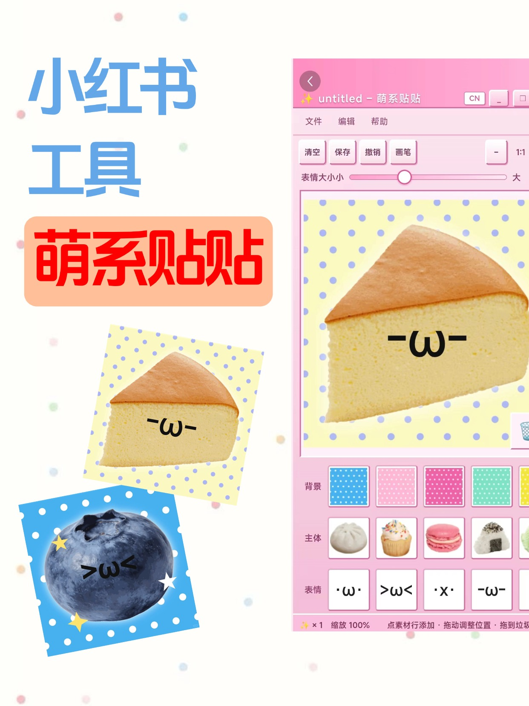
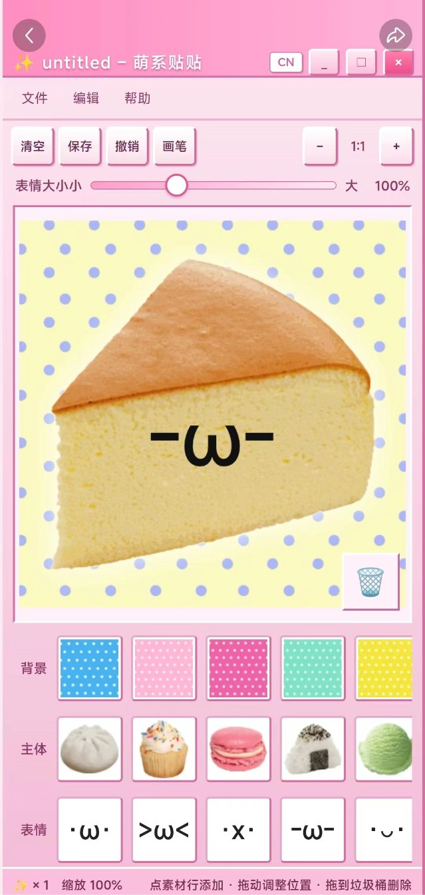
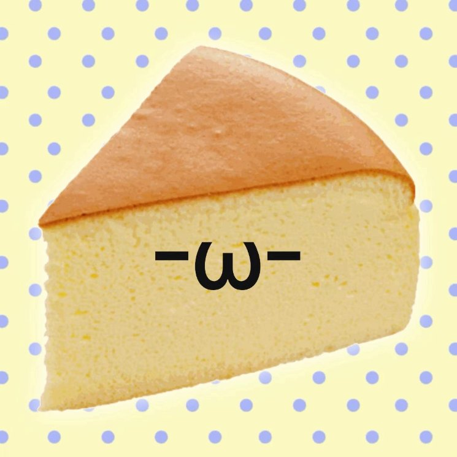

封面不讲卖点，先讲「这是什么东西」
刷到一条陌生笔记，第一秒决定的不是「好不好」，而是「关我什么事」。所以封面左上先用大字写品类词「小红书工具」，再用红字压在桃色高亮块上写产品名「萌系贴贴」，右边直接放工具界面实拍——过路人一眼就知道：这是个能上手用的东西，不是又一篇教程。卖点留给正文。
结果13.5%封面点击率，峰值 20%
想发「贴贴」内容，但发一条就得开 Ps 抠图。我把这件事压成了网页上的三步——然后它自己跑了起来：19.2 万曝光，7,701 赞藏，99.5% 的曝光来自陌生人。

想持续发「贴贴」类内容，但每条都要开 Ps 抠图，成本高到没法稳定更新。
把「选背景 → 选主体 → 贴表情 → 导出」做成网页三步，88 张素材全部自绘，不装任何软件。
19.2 万曝光、7,701 赞藏、118 涨粉；收藏是点赞的 74%——工具型内容最典型的数据指纹。
这是我在运营小红书时顺手做出来的一个小工具。动机很具体：想发「贴贴」这种内容，但每次都要开 Ps 抠图，一条内容光做图就要一小时。于是我花了一个周末，把素材、贴纸和导出流程全部搬到了网页上。
打开就能用：选一张背景、选一个主体、选一个表情，三层叠加，直接导出。整个过程不需要设计软件，也不需要会画画——这是我给它定的门槛，也是后面所有文案和封面的出发点。
素材部分我全部自己画，一共 88 张：50 张食物主体、22 张波点底图、16 张表情贴纸，统一成 Y2K 粉紫 Win98 的调子。
刷到一条陌生笔记，第一秒决定的不是「好不好」，而是「关我什么事」。所以封面左上先用大字写品类词「小红书工具」，再用红字压在桃色高亮块上写产品名「萌系贴贴」，右边直接放工具界面实拍——过路人一眼就知道：这是个能上手用的东西，不是又一篇教程。卖点留给正文。
结果13.5%封面点击率，峰值 20%
直接搬别人的贴纸，叠出来一定打架：这张粗描边、那张没描边，成品一眼就是「拼的」。88 张全部按同一套描边粗细、同一套粉紫配色画，任意三层叠在一起都不违和——这也是后面能持续出主题包的前提。
结果88 张三层任意叠加不出戏
很多人做到「导出 PNG」就停了，用户拿到图还得自己裁成平台比例——等于把最难的一步又还回去。Canvas 合成时直接按方形出图，导出就能发，中间不留任何需要二次加工的环节。
结果3,272收藏，是点赞的 74%


下面这张看板，是我把小红书创作中心导出的两份明细合起来做的：一份是流量表（曝光、观看、点击率、时长、涨粉），一份是互动表（点赞、评论、收藏、分享）。两边字段不重叠，拼起来才是一条完整的笔记。
第 6 天之前几乎是一条平线，第 11 天才真正加速。前三天数据差不等于内容不行——它只是还没被分发出去。
15 天里最低 8%、最高 20%（9-19）。封面在冷启动阶段就已经成立，后面起量是分发决定的，不是封面决定的。
点赞和收藏两根柱子几乎一样高，评论和分享很少。这是「工具型内容」才有的形状——普通内容不会长这样。
13.5% 的人点进来；进来的人里 33% 会点赞或收藏；每 1,000 次观看换来 4.6 个粉丝。
条形长度按对数缩放，只为让末端看得见；右侧百分比是真实转化率。
冷启动 · 6 天
7541.1%
曝光一共 754 次，涨粉 0。这个阶段能做的只有「别删」。
起势 · 4 天
2,8274.3%
9-19 点击率冲到 20%，系统开始给第二波量。
加速 · 3 天
29,93945.6%
三天吃掉近一半曝光，涨粉 25 人全在这几天。
峰值 · 2 天
32,14549.0%
单日最高 21,711 曝光，占整条笔记的 11%。
3,272 收藏对 4,429 点赞。人刷到内容会点赞，但只有「准备以后用」才会收藏——这是工具型内容的指纹，也解释了它为什么长尾特别长。
粉丝曝光占比只有 0.5%，观看占比 1.3%。这条没靠老粉，是纯公域跑出来的——所以它证明的是内容本身，不是账号存量。
15 天 65,665 次曝光，全周期 192,294 次。剩下 66% 是第 15 天之后慢慢来的：靠搜索、靠收藏夹被二次打开。
冷启动 6 天一共 754 次曝光、5 个赞。如果第三天就判定「这条不行」删掉，就没有后面的 19 万。
| 指标 | 前 15 天合计 | 全周期累计 | 15 天占比 |
|---|---|---|---|
| 曝光 | 65,665 | 192,294 | 34.1% |
| 观看 | 9,295 | 25,919 | 35.9% |
| 点赞 | 1,816 | 4,429 | 41.0% |
| 收藏 | 1,358 | 3,272 | 41.5% |
| 评论 | 122 | 259 | 47.1% |
| 分享 | 255 | 595 | 42.9% |
| 涨粉 | 47 | 118 | 39.8% |
工具属性。收藏 3,272 是点赞的 74%，用户存的不是「好可爱」，是「这个我以后要用」。这类内容吃的是搜索和收藏的二次分发，所以第 15 天之后还有 66% 的曝光在慢慢进来。
先做主题包，再发笔记。现在是先发内容再补素材，第 11 天开始加速的时候素材跟不上，第二波峰值没接住——看板上 D14–D15 那两天，其实可以更陡。
把素材库拆成可切换的主题包，让同一个工具能持续出内容，而不是一篇发完就没了。